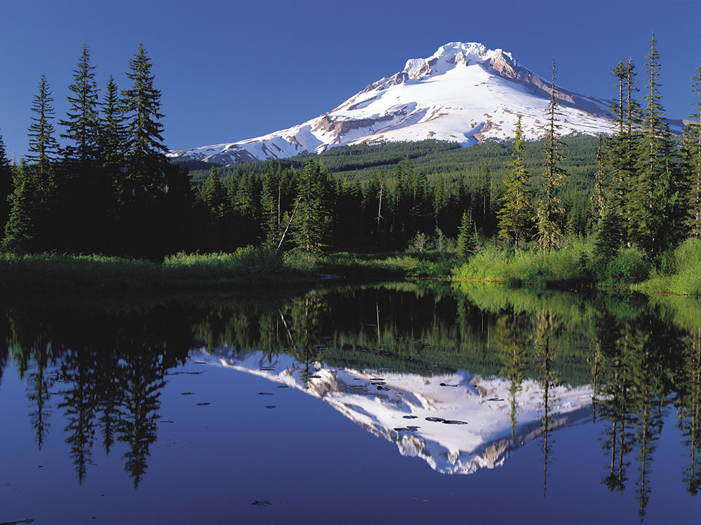
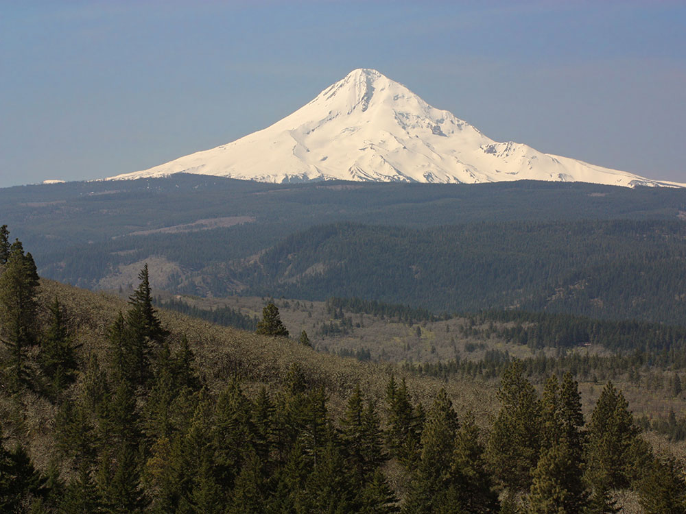

.jpg){kind=link}

Walter Siegmund, CC BY-SA 4.0, via Wikimedia Commons; Image Size Adjusted
From Portland (60 mi): Take I-84 E toward The Dalles, then merge onto US-26 E and follow it southeast directly to Government Camp and the Mount Hood recreation areas.
Mount Hood is a potentially active stratovolcano located about 50 miles (80 km) east-southeast of Portland. In addition to being Oregon's highest mountain, it is one of the loftiest mountains in the nation based on its prominence, and it offers the only year-round lift-served skiing in North America.
Mount Hood is Oregon's highest point and a prominent landmark visible up to 100 miles (160 km) away. It has convenient access and a minimum of technical climbing challenges. About 10,000 people attempt to climb Mount Hood each year. There are no trails to the summit. Even the "easier" southside climbing route is a technical climb with crevasses, falling rocks, and often inclement weather. Ropes, ice axes, crampons and other technical mountaineering gear are necessary. Peak climbing season is generally from April to mid-June.
There are six main routes to approach the mountain with about 30 total variations for summiting. The climbs range in difficulty from class 2 to class 5.9+.The most popular route, dubbed the south route, begins at Timberline Lodge and proceeds up Palmer Glacier to Crater Rock, the large prominence at the head of the glacier. The route goes east around Crater Rock and crosses the Coalman Glacier on the Hogsback, a ridge spanning from Crater Rock to the approach to the summit. The Hogsback terminates at a bergschrund where the Coalman Glacier separates from the summit rock headwall, and then to the Pearly Gates, a gap in the summit rock formation, then right onto the summit plateau and the summit proper.
The Timberline Trail, which circumnavigates the entire mountain and rises as high as 7,300 ft (2,200 m), was built in the 1930s by the Civilian Conservation Corps. Typically, the 40.7-mile (65.5 km) hike is snow-free from late July until the autumn snows begin. A portion of the Pacific Crest Trail is coincident with the Timberline Trail on the west side of Mount Hood.
Timberline Lodge Viewpoint:
Classic close-up views of the mountain with alpine scenery and year-round snowfields.
Trillium Lake:
One of the most photographed reflection views of the mountain, especially at sunrise and during fall colors.
Jonsrud Viewpoint:
Easy roadside overlook with panoramic mountain views above the Sandy River Valley.
Lookout Mountain:
High-elevation hiking viewpoint with sweeping vistas of the mountain and Cascade Range.
Lost Lake:
Calm lake offering iconic reflections and excellent sunset photography.
Vista Ridge Trail:
Dramatic ridgeline scenery with expansive mountain perspectives.
Lolo Pass Road Overlooks:
Scenic drive featuring multiple forest clearings and wide mountain views.
Mount Hood Meadows Scenic Area:
Expansive eastern-side views with summer wildflowers and winter ski scenery.
Cloud Cap / Cooper Spur:
Rugged north-side perspective with glacier and volcanic terrain views.
Mirror Lake:
Popular short hike ending with reflective lake views framed by the mountain.
The mountain has six ski areas: Timberline, Mount Hood Meadows, Ski Bowl, Cooper Spur, Snow Bunny, and Summit. They total over 4,600 acres (7.2 sq mi; 19 km2) of skiable terrain; Timberline, with one lift having a base at nearly 6,940 ft (2,120 m), offers the only year-round lift-served skiing in North America.
Mount Hood is the highest peak in Oregon, rising to 11,249 feet (3,429 meters) above sea level. Located about 50 miles east of Portland, the snow-covered stratovolcano is one of the most climbed glaciated peaks in North America and is often considered an introduction to mountaineering for aspiring climbers. Despite its accessibility, Mount Hood is a serious alpine objective that requires proper preparation, physical fitness, and respect for rapidly changing mountain conditions.
Most summit attempts follow the classic South Side Route from Timberline Lodge. Climbers ascend steep snowfields, traverse the Hogsback Ridge, and typically pass through either the Pearly Gates or Old Chute before reaching the summit. The climb offers spectacular views of Mount Adams, Mount St. Helens, Mount Rainier, the Columbia River Gorge, and the Cascade Range.
| Route | Difficulty | Overview |
|---|---|---|
| South Side via Pearly Gates | Moderate to Strenuous | The most popular route, featuring steep snow climbing and a narrow summit chute. |
| South Side via Old Chute | Moderate to Strenuous | An alternative to Pearly Gates that is often used when route conditions change. |
| Cooper Spur | Advanced | A more remote and committing alpine route on the mountain's east side. |
| Leuthold Couloir | Advanced | A steeper west-side route requiring greater mountaineering experience. |
| Reid Glacier Headwall | Expert | Technical alpine climb involving snow and ice climbing techniques. |
Most climbers begin their summit push during the night or before sunrise to take advantage of firmer snow conditions and reduce exposure to rockfall hazards that become more common later in the day.
| Experience | Typical Price | Overview |
|---|---|---|
| One-Day Guided South Side Climb | Approximately $700-$900 | Most common guided option for climbers with the required skills and fitness. |
| Two-Day Guided Summit Program | Approximately $1,200-$1,600 | Includes training, overnight accommodations, and summit attempt. |
| Private Guided Climb | Approximately $1,200-$2,400+ | Customized instruction and private guide-to-client ratios. |
| Mountaineering Skills Course + Summit | Approximately $1,500-$2,000 | Combines essential skills training with a guided summit attempt. |
The average cost of a guided Mount Hood summit climb is approximately $1,000-$1,200 per person, depending on guide service, group size, training components, and overnight accommodations.
| Season | Conditions |
|---|---|
| April - June | Most popular climbing season with consolidated snow and generally favorable conditions. |
| July - August | Increasing rockfall and more variable route conditions. |
| September - October | Conditions vary significantly and can become more technical. |
| Winter | Reserved for experienced mountaineers due to avalanche and weather hazards. |
Mount Hood is often considered a first major glaciated peak for aspiring mountaineers, but it should not be underestimated. First-time climbers are strongly encouraged to participate in a guided summit climb or mountaineering skills course to learn crampon technique, ice axe use, self-arrest skills, and alpine safety practices before attempting the summit.
Information in this article is based on guided climb descriptions, route information, and pricing published by Kaf Adventures, Timberline Mountain Guides, Trillium Alpine Guides, and mountaineering route resources describing the South Side ascent, Pearly Gates, Old Chute, and other Mount Hood climbing routes.
This article uses material from the Wikipedia article "Mount Hood", which is released under the Creative Commons Attribution-Share-Alike License 3.0

